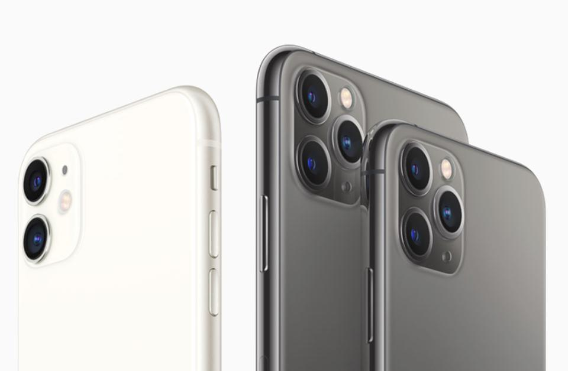

Apple has had one of my favorite websites designs for many years now. They nail all the user experience boxes: high resolution images, concise and legible text, fluid page movement, and easy navigation and button clicking. Apple’s new “Dark Mode” campaign is definitely on display with the website’s overall theme as well, which produces a stealthy, yet captivating appearance overall. All of these together create one of the best user experiences out there. The code is very up-to-date and clean. It uses HTML5 elements like "head", "body", "h1", "meta", "nav", "div", and plenty more. I did not see any code for tables, but I saw a ton of "link"’s and "meta"’s while scrolling through products and tabs. Their website validates as well. Apple’s website is laid out very well, with one main column to scroll with. Within the one column, there are different section of products and information that are separated via white space, which creates a smooth scroll that flows well. Navigation is very straightforward, with the amount of guiding words and tabs being concise. This allows for ample space between important buttons and words, making it easy to understand their purpose. The tabs are categorized in a straightforward way, along with their stationary position at the top of the screen while you scroll. Apple uses a lot of white and black space in their website, which I do not think is a bad thing at all. They use this bland space to make their products pop, such as their colorful iPhones, Macs, iPads, wallpapers, etc. It is simplistic in its execution and portrayal, which is the overall aesthetic of Apple. The emphasis on certain colors in their website’s product images puts the focus on the products, which funnels the customers attention in one spot. The white and black space is also a defining part of Apple’s website, setting them apart from the rest. It was once thought that white space was a bad thing. However, Apple uses it in such an appealing and effective way that it makes you wonder why more websites do not use it more. It is a great accent to highlight your beautiful products. The text is very simple and uniform, which adds to the unified branding elements they try so hard to emulate everywhere. And as mentioned before, the images used on the website are second to none in clarity, lighting, and positioning.